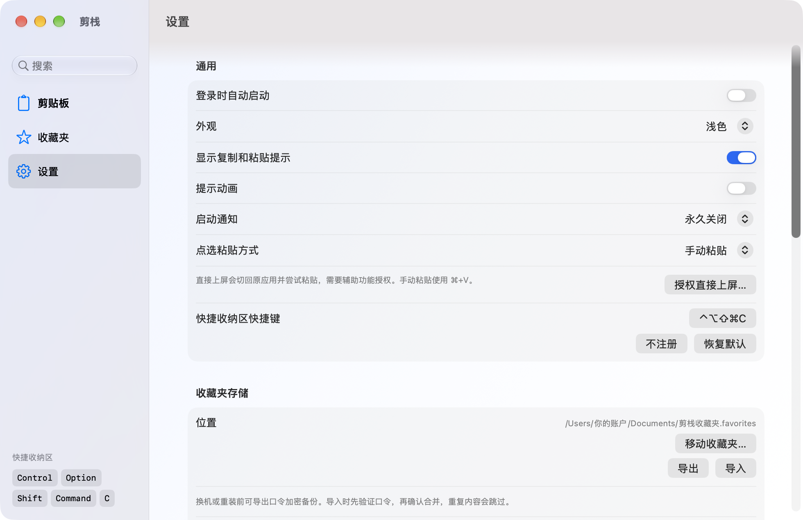

macOS 26 及以上 · 剪栈 1.1.2 · 离线阅读
刚复制过的文字、链接、图片和文件都能从历史里找回。只用一次的资料留在剪贴板，反复要用的内容可手动加密收藏。
需要自己决定粘贴时机，可在「设置 → 点选粘贴方式」选择「手动粘贴」，点选后回到目标应用按 ⌘+V。
打开安装镜像，将剪栈拖到 Applications。启动后剪栈驻留在菜单栏。直接启动、登录自启动、重复打开和应用内重启都会安静地进入后台。
主窗口通过菜单栏右键「显示主界面」、快捷收纳区「查看全部」或 Dock 右键「检索剪贴板」打开。主窗口打开时显示 Dock 图标，关闭后继续在菜单栏记录复制。菜单栏与 Dock 菜单中的「退出」会结束整个应用。
启动通知会告知剪栈已在后台运行。设置中选择「启动通知 → 永久关闭」可保存这一选择。
| 方式 | 操作 | 使用场景 |
|---|---|---|
| 直接上屏 | 先在目标应用放好光标，点选历史或收藏记录。 | 连续填表、整理会议记录、插入常用回复。 |
| 手动粘贴 | 点选后切到目标应用按 ⌘+V。 | 先核对联系人、选中替换范围或检查插入位置。 |
直接上屏需要 macOS 辅助功能授权。可从设置点击「授权直接上屏…」，在系统设置允许剪栈控制键盘输入。授权不足、目标窗口已关闭或焦点无法恢复时，会提示「已复制，请按 ⌘+V 粘贴」。
打开快捷收纳区时按住的组合键，需要先全部松开。剪栈会等编辑焦点稳定后再发送粘贴。请在 Word 或 Pages 正文中放好光标，避免选中工具栏。
两种模式首次使用时会各发送一次系统通知。手动粘贴已选内容时，若系统允许检测相应按键，屏幕下方会出现「已发送粘贴」。目标应用是否接受了内容，以实际编辑结果为准。
| 想做什么 | 操作 |
|---|---|
| 搜索 | ⌘+F 聚焦左侧搜索框。多个词用空格分开，如「会议 周五」。历史和收藏分别列出命中项。 |
| 批量选择 | ⌘+A 全选当前历史，⌘ 加点按切换单条选择，Shift 加点按选一段，也可用鼠标拖动框选。 |
| 删除历史 | 点「删除」，或选中后按 Delete / Backspace。 |
| 收藏 | 点「收藏」后变为「已收藏」，再次点按可取消。清空历史仍保留收藏。 |
| 预览 | 按空格或点眼睛按钮。按 Esc、再按空格或切出焦点即可关闭。 |
主窗口可见时，预览以主窗口为中心。主窗口隐藏或最小化时，预览以当前屏幕的可用区域为中心。图片可点按重播叠层相纸动画，图片预览的右键菜单提供「复制图像」。
富文本段落通过原生富文本视图或内置 HTML 查看器呈现。复制的文件保留原始路径，图片文件提供图像预览，支持的文档通过 Quick Look 查看。程序、视频及其他文件可在 Finder 定位。文件已移动或无权限时，会显示相应说明。

| 项目 | 用途 |
|---|---|
| 登录时自动启动 | 控制当前用户登录后静默运行。系统要求批准时在「系统设置 → 通用 → 登录项与扩展」处理。 |
| 外观 | 浅色、深色或跟随系统，使用 macOS 原生控件和 Liquid Glass。 |
| 提示动画 | 复制和粘贴提示的进场与退场各 0.5 秒，可关闭，遵循系统减少动态效果。 |
| 启动通知 | 选择开启或永久关闭。系统通知的授权可在 macOS 通知设置调整。 |
| 快捷收纳区快捷键 | 点录入按钮后直接按组合键，默认 Control+V。冲突会提示并拒绝注册，也可选择「不注册」。 |
| 收藏夹存储 | 可移动本机收藏文件，移动后确认重启。导出用于口令加密备份，导入用于验证口令和合并恢复。 |
| 软件更新 | 后台每天检查一次，有新版时发送系统通知。手动「检查更新」查看日志，选择「下载并安装」后再安装。 |
.clipstack-backup 文件。备份是导出时的收藏快照。本机收藏用 AES-256-GCM 加密，密钥存于钥匙串。把收藏文件放进 iCloud 可以同步文件，跨设备恢复请使用带口令的导出备份。收藏中的文件记录保存原始路径，文件本体需另行管理。软件不负担 iCloud 套餐费用。
从邮件、网页和聊天依次复制结论、负责人和截止日期。回到 Word 或 Pages，把光标放在相应段落，用快捷收纳区逐条取用。
收藏常用报价和服务说明。先选手动粘贴，搜索客户名对应的片段，核对聊天对象后再按 ⌘+V。
依次复制多张截图，打开独立预览查看细节。选中需要的图片后粘贴至 Keynote 或文档，常用图表可收藏。
用「添加内容」写下尺寸、帧率或命名规则，然后收藏。下次搜索参数关键词即可取用。
昨天的记录去哪了？ 历史与当前登录会话关联，退出剪栈再打开可以继续使用同次登录历史，注销或关机后进入新历史。长期需要的内容请收藏。
快捷键无反应？ 先单击菜单栏图标，检查是否选择了「不注册」，或更换冲突的组合键。
直接上屏未插入？ 检查辅助功能授权，在正文中放好光标并松开组合键。看到手动粘贴提示后，可直接回到目标应用按 ⌘+V。
如何彻底清空？ 选择「清空全部」并确认，系统剪贴板和剪栈历史一起清空，收藏继续保留。
没有收到通知？ 屏幕下方的提示由剪栈设置控制，启动、模式和更新通知由 macOS 通知权限控制。手动粘贴按键检测也受系统输入访问权限影响。
更新检查发现版本却无法安装？ 该版本需要提供对应的 macOS 安装镜像。下载后会核对文件大小和 SHA-256，失败时可重新检查和下载。